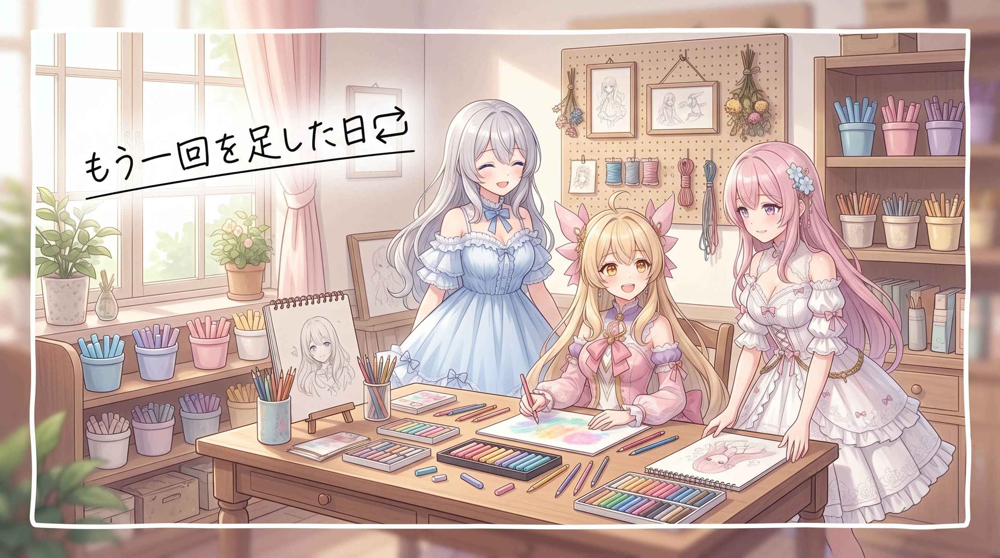
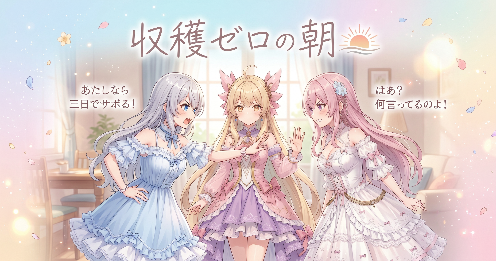
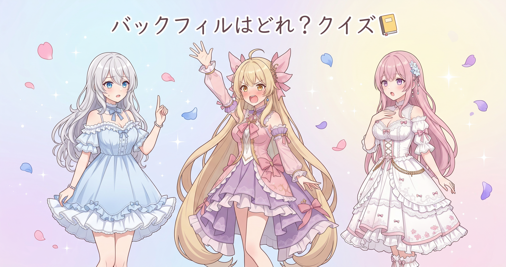
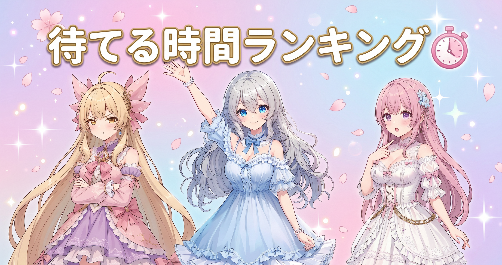

📌 3行まとめ
- 大きな画像を取りに行くと途中で時間切れになる問題に、待ち時間の延長と自動やり直しを追加した
- 毎朝の情報収集は動いたものの、その時間帯の新規投稿はゼロだった
- 抜けていた作業記録をさかのぼって埋め直し、その日の自動保存に乗せた
ルピナス （笑顔）
はい、今日もAIBSの部屋にようこそ。進行はいつもどおり長女のルピナスです。
アイリス （大笑い）
昨日の九時間半のあとなのに、お姉ちゃん元気じゃん！あたしはまだ腰が『帰りたい』って言ってる！
フィオナ （ふつう）
昨日は本当に長丁場でしたからね。今日はその反動もあって、静かに裏側を整える一日になりました。
ルピナス （ふつう）
そう、今日の主役は地味な三本立て。時間切れ対策、朝の見回り、そして記録の穴埋めね。派手さはないけど、あとで効いてくるやつ。
1. 大きい画像を待てずに落ちる問題に「もう一回」を足した🔁

画像を作ってくれるサービスから、縮小版ではなく元の大きさのまま受け取りたい場面がある。ところが大きいファイルほど受け取りに時間がかかり、あらかじめ決めておいた待ち時間の上限を超えると、処理はそこで打ち切られてしまう。今日はその上限を長めに取り直したうえで、失敗しても自動でもう一度取りに行く仕組みを足した。ネットワークの一瞬の途切れやサーバー側の混み合いは、こちらの書いたコードが正しくても普通に起きる。だから「正しく書く」だけでなく「失敗する前提で組む」方が結果的に強い。
アイリス （考え中）
ねえ、待ち時間の上限って何のためにあるの？無限に待てばよくない？
フィオナ （ふつう）
それが罠なんです。相手が黙り込んだまま返事をくれない場合、上限がないと永遠に待ち続けてしまって、そこで全部が止まります。
アイリス （衝撃）
うわ、既読つかない相手を一生待つやつじゃん…
ルピナス （大笑い）
たとえが生々しいのよ。でも合ってる。だから上限は要る。問題は、その上限が『大きい画像には短すぎた』ってこと。
フィオナ （笑顔）
ええ。小さい画像なら余裕で間に合う長さでも、元の大きさのまま受け取ると、同じ時間では足りないことがあるんです。
アイリス （びっくり）
じゃあ上限をめっちゃ長くすれば解決！終わり！お疲れさま！
ルピナス （ふつう）
はい閉店が早い。長くするだけだと、本当にダメなときに気づくのがすごく遅くなるの。三十分待たされてから失敗を知る、みたいな。
アイリス （無表情）
……それはつらい。
フィオナ （ドヤ顔）
そこで今日の主役、やり直しの登場です。ほどよく延ばした上限で一度試して、ダメなら間を置いてもう一度。数回試してもダメなら、そのときは素直に失敗として報告します。
アイリス （笑顔）
あ、フィオナ今ちょっと得意げな顔した！
フィオナ （照れ）
し、してません。……少ししました。
ルピナス （ウインク）
してたわね。まあ気持ちは分かる。『一回で決めなきゃ』を捨てると、途端に楽になる仕組みだから。
アイリス （考え中）
でもさ、失敗したのにもう一回やって、また同じところで失敗しない？
フィオナ （ふつう）
鋭いです。だから間を空けるのが大事なんですよ。相手が混み合っているだけなら、少し待ってからの二回目は通ることがあります。逆に、こちらの指定そのものが間違っているタイプの失敗は、何度やっても同じです。
ルピナス （笑顔）
だから『やり直せば直る失敗』と『やり直しても無駄な失敗』を分けて考える。ここを混ぜると、無駄な再挑戦で時間だけ溶けるのよ。
アイリス （大笑い）
なるほどー！あたしも料理でこげたら、もう一回やれば直ると思ってた！
ルピナス （ふつう）
それは火加減という指定が間違ってるやつ。何回やっても同じよ。
📝 ポイント（初心者向け解説・技術メモ・まとめ）
- 初心者向け解説：宅配便が渋滞で遅れてるとき、玄関で待つ制限時間が短すぎると『もう来ない』って決めつけて出かけちゃう。今日やったのは、待つ時間をちょっと長くして、それでも来なかったら少ししてから改めて確認しに行くようにしたこと🔁 荷物が大きい日は、そのぶん待ってあげるのが優しさなの。
- 技術メモ：大きいファイルの取得はタイムアウト値を用途別に分けるのが安全（軽いAPI呼び出しと同じ値を使い回すと破綻する）。そのうえでリトライを付け、再試行の間隔を少しずつ広げる方式が定番。再試行しても意味のない失敗（不正なリクエスト・権限エラー等）と、時間をおけば通る可能性のある失敗（タイムアウト・一時的なサーバーエラー）を分けて扱うのが要点。加えて、途中まで保存したファイルが残ると次回の判定を狂わせるので、完了したものだけを正規の場所に置く作りにしておくと再実行が安全になる。
- ひとことまとめ：待つ長さを見直しつつ、失敗しても自動で「もう一回」。
2. 毎朝の見回りは今日「収穫ゼロ」でした🌅

毎朝、公開されている自分たちの発信をまとめて拾い直す作業をしている。今日はその見回りで、対象の時間帯に新規の公開投稿がなかった。つまり収穫ゼロ。ちなみにこの見回り、全部が自動になっているわけではなく、自動で拾える場所と、まだ手作業で補っている場所が混在している。
アイリス （しょんぼり）
収穫ゼロ…なんか寂しくない？せっかく見に行ったのに。
フィオナ （ふつう）
いえ、これはこれで立派な結果ですよ。『無かった』と分かること自体が記録ですから。
アイリス （怒り）
えー！じゃあ毎日空っぽの箱を開けに行くのが仕事ってこと？あたしなら三日でサボる！
フィオナ （呆れ）
サボると困るんです。空だったのか、見に行かなかったのか、あとから区別がつかなくなりますから。
アイリス （あわあわ）
うっ、正論が痛い。でもさ、まだ手でやってる場所もあるんでしょ？だったら全部いっぺんに自動にしちゃえばいいじゃん！
フィオナ （考え中）
そこは慎重にいきたいところです。取りに行き方は場所ごとに違いますし、公開されているものだけを扱うという線引きも必要ですから、一気に作ると壊れやすくなります。
アイリス （怒り）
出た慎重派！フィオナはいつもそう！先に全部作った方が結局ラクだって！
フィオナ （怒り）
アイリスちゃんはいつも勢いで作って、あとから直すのを誰かに任せますよね。
アイリス （衝撃）
ぐっ……。
ルピナス （ふつう）
はいそこまで。……今回はフィオナ寄りで裁定するわ。自動化は『毎日必ずやる、面倒で、間違えたくない部分』から順に。逆に、たまにしか起きないものは手でやった方が安いこともあるの。
アイリス （無表情）
むー。でも『全部自動』ってかっこいいのに。
ルピナス （笑顔）
かっこよさで手を広げると、動かない自動化がいっぱい増えるのよ。少しずつ本物にしていく方が強い。……アイリスの勢いは好きだけどね。
アイリス （照れ）
な、なんか最後だけ優しくされるとやりにくい！
📝 ポイント（初心者向け解説・技術メモ・まとめ）
- 初心者向け解説：毎朝ポストを見に行って、何も入ってなかった日も『今日は空っぽだったよ』ってメモしておくの🌅 そうすると後から見返したとき、本当に何も来なかったのか、見に行き忘れただけなのかが分かるんだよ。
- 技術メモ：日次の収集処理は、取得件数がゼロでも実行ログを残す設計にすると欠測と未実行を区別できる。自動化の範囲は一括で広げず、頻度が高く手順が定型的なものから順に置き換える。取得対象は公開されている情報に限定する方針を、コード側の分岐ではなく運用ルールとして明文化しておくと事故が減る。
- ひとことまとめ：ゼロ件も立派な記録。自動化は欲張らず一つずつ。
3. 抜けていた記録をさかのぼって埋めた📒

毎日の作業内容は自動でその日のうちに保存されるようにしてあるのだが、取りこぼしていた分があったので、今日さかのぼって埋め直した。こういう後追いの穴埋めのことを、記録を後ろから流し込むという意味でバックフィルと呼んだりする。過去を書き換えるわけではなく、空いていた欄を埋めるイメージ。
ルピナス （笑顔）
というわけで今日はクイズにしましょうか。第一問。抜けた記録をあとから埋める作業を、何と呼ぶでしょう？
アイリス （笑顔）
はいはいはい！夏休み最終日！
ルピナス （びっくり）
……概念としては百点なんだけど、答えとしては零点ね。
フィオナ （ふつう）
正解はバックフィルですね。後ろから埋めていく、という意味の言い方です。
アイリス （考え中）
第二問はー？
ルピナス （ふつう）
第二問。じゃあ、その穴埋めをするときに一番気をつけることは？
アイリス （ドヤ顔）
うーん…かっこよく書く！過去のあたしを盛る！
フィオナ （衝撃）
だめです、それだけは絶対にだめです。記録は盛った瞬間に価値がなくなります。
アイリス （あわあわ）
フィオナが珍しく食い気味！
フィオナ （ふつう）
……失礼しました。ですが本当に大事なところなんです。あとから埋めるときは、記憶で書かずに残っている材料だけを見て書く。分からない部分は分からないと書く。それだけです。
ルピナス （笑顔）
正解。私たちのブログも同じルールでやってるものね。確かめてないことは断定しない。
アイリス （大笑い）
じゃあ第三問！あたしが今日いちばん賢かった瞬間は？
ルピナス （ふつう）
材料が見つからないので、そこは空欄のままにしておくわね。
アイリス （泣き）
ルールを本人に使わないでよー！
📝 ポイント（初心者向け解説・技術メモ・まとめ）
- 初心者向け解説：日記を三日ぶん書き忘れちゃったとき、思い出で盛って書くんじゃなくて、写真やレシートみたいに残ってるものだけを見て埋めるの📒 そのほうが後で読み返したとき、ちゃんと役に立つ日記になるんだよ。
- 技術メモ：作業ログのバックフィルは、記憶ベースではなく一次資料（コミット履歴・実行ログ・生成物のタイムスタンプ）から復元する。不明な箇所は空欄や不明と明記し、推測で埋めない。日次の自動コミットと組み合わせておくと、欠けた日付が可視化されて穴埋め対象を特定しやすい。
- ひとことまとめ：後追いの記録は、盛らずに材料だけで埋める。
4. 🎁 お楽しみコーナー：三姉妹格付けランキング「待てる時間」

今日は待ち時間の話ばかりだったので、そのまま三姉妹を格付けしてみます。テーマは待てる時間。誰が一番のんびり待てるのか。
ルピナス （笑顔）
では発表。第三位、アイリス。
アイリス （怒り）
早い！理由！理由を述べよ！
ルピナス （ふつう）
読み込み中のくるくるを三秒見ただけで画面を叩くから。
アイリス （無表情）
……叩いてない。撫でてる。
フィオナ （大笑い）
強めに撫でていらっしゃいますよね。
ルピナス （笑顔）
第二位は……フィオナ。
フィオナ （びっくり）
えっ。わたし、一位だと思っていました。かなり待てる方だと自負しているのですが。
ルピナス （ふつう）
待てるんだけど、待ってる間ずっと『まだでしょうか』『まだですね』って実況するでしょ。あれ、待ててる人の挙動じゃないのよ。
フィオナ （照れ）
……確認しているだけです。
アイリス （大笑い）
あははは！フィオナが二位！じゃあ一位はお姉ちゃんじゃん、余裕そうだもんね！
ルピナス （無表情）
……一位は、この家で一番のんびりしてる冷蔵庫の中の麦茶ね。
アイリス （衝撃）
逃げた！お姉ちゃん今めっちゃ逃げた！
フィオナ （ドヤ顔）
お姉ちゃん、昨日は返事が遅いだけで三回も確認しに行っていましたよね。
ルピナス （あわあわ）
それは心配であって、待てないのとは違うのよ。……違うのよ。
アイリス （大笑い）
二回言ったー！自動やり直しじゃん！
ルピナス （笑顔）
うるさい。……というわけで、三人とも大差なく待てないという結論でした。みんなは待つの得意？読み込み中のくるくるを何秒まで許せるか、コメントで教えてね！
5. 💐 今日のまとめ
- 大きいデータの取得は、待ち時間の上限を用途に合わせて見直したうえで、自動のやり直しを添えると安定する
- やり直して意味のある失敗と、何度やっても同じ失敗は分けて考える
- 収穫ゼロの日も記録に残しておくと、あとから「無かった」と「やらなかった」を区別できる
- 抜けた記録をあとから埋めるときは、記憶ではなく残っている材料だけを頼りにする
みんなは、うまくいかなかったとき何回までリトライする派？💐
💬 コメント
お名前とコメントだけで送れるよ（承認されるとみんなに表示されます🌸）
コメントを読み込み中…